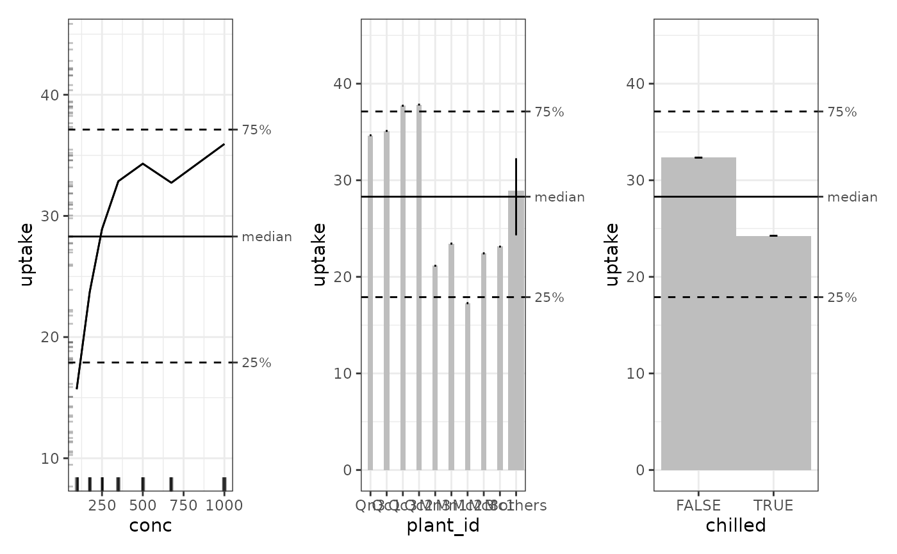

An ALE S7 object contains ALE data and statistics. For details, see vignette('ale-intro') or the details and examples below.
Usage
ALE(
model,
x_cols = list(d1 = TRUE),
data = NULL,
y_col = NULL,
...,
exclude_cols = NULL,
parallel = 0,
model_packages = NULL,
output_stats = TRUE,
output_boot_data = FALSE,
pred_fun = NULL,
pred_type = "response",
p_values = "auto",
require_p_model_match = TRUE,
aler_alpha = c(0.01, 0.05),
aled_fun = NULL,
max_num_bins = 10L,
fct_order = "levels",
boot_it = 0L,
boot_alpha = 0.05,
boot_centre = "mean",
seed = 0,
y_type = NULL,
sample_size = 500L,
silent = FALSE,
.bins = NULL
)Arguments
- model
model object. Required. Model for which ALE should be calculated. May be any kind of R object that can make predictions from data.
- x_cols, exclude_cols
character, list, or formula. Columns names from
datarequested in one of the specialx_colsformats for which ALE data is to be calculated. Defaults to 1D ALE for all columns indataexcepty_col. See details in the documentation forresolve_x_cols().- data
dataframe. Dataset from which to create predictions for the ALE. It should normally be the same dataset on which
modelwas trained. If not provided,ALE()will try to detect it automatically if it is included in themodelobject.- y_col
character(1). Name of the outcome target label (y) variable. If not provided,
ALE()will try to detect it automatically from themodelobject. If not found automatically,y_colshould be provided. For time-to-event (survival) models, see details.- ...
not used. Inserted to require explicit naming of subsequent arguments.
- parallel
non-negative integer(1) or character(1) in c("all", "all but one"). Number of parallel threads (workers or tasks) for parallel execution of the constructor. The default
parallel = 0disables parallel processing. "all but one" uses all available physical CPU cores minus one, reserved for the system, whereas "all" uses all physical and logical cores reported by the system. See details.- model_packages
character. Character vector of names of packages that
modeldepends on that might not be obvious with parallel processing. If you get weird error messages when parallel processing is enabled but they are resolved by settingparallel = 0, you might need to specifymodel_packages. See details.- output_stats
logical(1). If
TRUE(default), return ALE statistics.- output_boot_data
logical(1). If
TRUE, return the raw ALE data for each bootstrap iteration. Default isFALSE.- pred_fun, pred_type
function,character(1).
pred_funis a function that returns a vector of predicted values of typepred_typefrommodelondata. The defaultNULLforpred_funwill often work; if you get an error message, see details.- p_values
instructions for calculating p-values. Possible values are:
NULL: p-values are not calculated.An
ALEpDistobject: the object will be used to calculate p-values."auto"(default): If statistics are requested (output_stats = TRUE) and bootstrapping is requested (boot_it > 0), the constructor will try to automatically create a fast surrogateALEpDistobject; otherwise, no p-values are calculated. However, automatic creation of a surrogateALEpDistobject might not work with all R models. If the automatic process errors, then you must explicitly create and provide anALEpDist()object. Note: although faster surrogate p-values are convenient for interactive analysis, they are not acceptable for definitive conclusions or publication. See details below.
- require_p_model_match
logical(1). If
TRUE(default),p_valuesmust be generated with exactly the samemodelobject,y_col, andpred_type, even in the case of surrogate p-values. Surrogate distributions are checked against their original model and prediction settings. SettingFALSEdisables all these compatibility checks. Only disable this option if certain that a deliberate exception is appropriate, otherwise calculated p-values may be completely invalid. A notable valid exception is resampling the same model specification on various samples, such as with bootstrapping or cross-validation.- aler_alpha
numeric(2) from 0 to 1. Thresholds for p-values ("alpha") for confidence interval ranges for the ALER band if
p_valuesare provided (that is, notNULL). The inner band range will be the median value of y ±aler_alpha[2]of the relevant ALE statistic (usually ALE range or normalized ALE range). When there is a second outer band, its range will be the median ±aler_alpha[1]. For example, in the ALE plots, for the defaultaler_alpha = c(0.01, 0.05), the inner band will be the median ± ALER minimum or maximum at p = 0.05 and the outer band will be the median ± ALER minimum or maximum at p = 0.01.- aled_fun
character(1) in c("mad", "sd"), or NULL. Deviation function used to calculated ALE deviation.
"mad"is the mean absolute deviation;"sd"is the standard deviation. The defaultNULLwill normally use"mad"except if anALEpDistobject is provided forp_values; in that case, thealed_funis taken from theALEpDistobject.- max_num_bins
integer(1) > 1 or list. For numeric
x_cols, this sets an upper bound on the number of ALE bins, where actual bins are the lesser of the number of unique values andmax_num_bins+1. Valid formats are:Single integer > 1: used for all numeric
x_cols.List with overrides: a list with exactly two elements:
defaultis a single integer > 1 used as the default value;exceptis a named integer vector with values > 1 of per-column upper bounds. Unknown names are ignored with a warning. Non-numericx_cols(binary/ordinal/categorical) always use all observed levels. An example of the list format would bemax_num_bins = list(default = 10, except = c(wt = 25, carb = 4))
The default value of 10 is recommended for speed; it should adequately express most relationships. Increase it (e.g., to 100) for complex relationships. However, higher values are slower, especially for ALE interactions. When
nbins are requested, there will actually ben+1bins, with the lowest bin dedicated to the minimum value of the dataset.- fct_order
character(1) or list. Specifies how unordered factors and characters will be ordered for ALE calculation. (Ordered factors ignore this setting; they always use their intrinsic order.) The following options are possible:
"levels"(default): For ordered factors, use the order of the factor levels. Recommended for meaningful interpretation because this lets the user explicitly control their semantic sort order as desired. For characters, order unique values alphabetically."y_col": Sort based on the increasing mean values of the predictions ofy_colfor each factor level."ksd": Not recommended except for compatibility with the original ALEPlot reference implementation.List with overrides: a list with exactly two elements:
defaultis a character string with one of the above as the default value;exceptis a named character vector with per-column orderings. Unknown names trigger an error. An example of the list format would befct_order = list(default = "levels", except = c(continent = "y_col"))
See details.
- boot_it
non-negative integer(1). Number of bootstrap iterations for data-only bootstrapping on ALE data. This is appropriate for models that have been developed with cross-validation. For models that have not been validated, full-model bootstrapping should be used instead with a
ModelBoot()class object. See details there. The defaultboot_it = 0turns off bootstrapping.- boot_alpha
numeric(1) from 0 to 1. When ALE is bootstrapped (
boot_it > 0),boot_alphaspecifies the thresholds for p-values ("alpha") for percentile-based confidence interval range for the bootstrapped ALE values. The bootstrap confidence intervals will be the lowest and highest(1 - 0.05) / 2percentiles. For example, ifboot_alpha = 0.05(default), the confidence intervals will be from the 2.5 (low) and 97.5 (high) percentiles.- boot_centre
character(1) in c('mean', 'median'). When bootstrapping, the main estimate for the ALE y value is considered to be
boot_centre. Regardless of the value specified here, both the mean and median will be available.- seed
integer(1). Random seed. Supply this between runs to assure that identical random ALE data is generated each time when bootstrapping. Without bootstrapping, ALE is a deterministic algorithm that should result in identical results each time regardless of the seed specified. However, with parallel processing enabled, only the exact computing setup will give reproducible results. For reproducible results across different computers, leave parallelization disabled with
parallel = 0.- y_type
character(1) in c('binary', 'numeric', 'categorical', 'ordinal'). Datatype of the y (outcome) variable. Normally determined automatically; only provide if an error message for a complex model requires it.
- sample_size
non-negative integer(1). Size of the sample of
datato be returned with theALEobject. This is primarily used for rug plots inALEPlots().- silent
logical(1), default
FALSE.IfTRUE, do not display any non-essential messages during execution (such as progress bars). Regardless, any warnings and errors will always display. See details for how to customize progress bars.- .bins
Internal use only. List of ALE bin and n count vectors. If provided, these vectors will be used to set the intervals of the ALE x axis for each variable. By default (
NULL),ALE()automatically calculates the bins..binsis normally used in advanced analyses where the bins from a previous analysis are reused for subsequent analyses (for example, for full model bootstrapping withModelBoot()).
Methods
ALE objects support get(), plot(),
print(), and summary(). Each method
topic documents its complete signature and class-specific arguments.
Properties
- effect
Stores the ALE data and, optionally, ALE statistics and bootstrap data for one or more categories.
- params
The parameters used to calculate the ALE data. These include most of the arguments used to construct the
ALEobject. These are either the values provided by the user or those used by default if the user did not change them but also includes several objects that are created within the constructor. These extra objects are described here, as well as those parameters that are stored differently from the form in the arguments:* `max_d`: the highest dimension of ALE data present. If only 1D ALE is present, then `max_d == 1`. If even one 2D ALE element is present (even with no 1D), then `max_d == 2`. * `requested_x_cols`,`ordered_x_cols`: `requested_x_cols` is the resolved list of `x_cols` as requested by the user (that is, `x_cols` minus `exclude_cols`). `ordered_x_cols` is the same set of `x_cols` but arranged in the internal storage order. * `y_cats`: categories for categorical classification models. For non-categorical models, this is the same as `y_col`. * `y_type`: high-level datatype of the y outcome variable. * `y_summary`: summary statistics of y values used for the ALE calculation. These statistics are based on the actual values of `y_col` unless if `y_type` is a probability or other value that is constrained in the `[0, 1]` range, in which case `y_summary` is based on the predictions of `y_col` from `model` on the `data`. `y_summary` is a named numeric matrix. For most outcomes with a single value per predicted row, there is just one column with the same name as `y_col`. For categorical y outcomes, there is one column for each category in `y_cats` plus an additional column with the same name as `y_col`; this is the mean of the categorical columns. The rows are named mostly as the percentile of the y values. E.g., the '5%' row is the 5th percentile of y values. The following named rows have special meanings: * `min`, `mean`, `max`: the minimum, mean, and maximum y values, respectively. Note that the median is `50%`, the 50th percentile. * `aler_lo_lo`, `aler_lo`, `aler_hi`, `aler_hi_hi`: When p-values are present, `aler_lo` and `aler_hi` are the inner lower and upper confidence intervals of `y_col` values with respect to the median (`50%`); `aler_lo_lo` and `aler_hi_hi` are the outer confidence intervals. See the documentation for the `aler_alpha` argument to understand how these are determined. Without p-values, these elements are absent. * `model`: selected elements that describe the `model` that the `ALE` object interprets. * `data`: selected elements that describe the `data` used to produce the `ALE` object. To avoid the large size of duplicating `data` entirely, only a sample of the size of the `sample_size` argument is retained. * `probs_inverted`: `TRUE` if the original probability values of the ALE object have been inverted using [invert_probs()]. `FALSE`, `NULL`, or absent otherwise.
Custom predict function
The calculation of ALE requires modifying several values of the original data. Thus, ALE() needs direct access to the predict function for the model. By default, ALE() uses a generic default predict function of the form predict(object, newdata, type) with the default prediction type of 'response'. If, however, the desired prediction values are not generated with that format, the user must specify what they want. Very often, the only modification needed is to change the prediction type to some other value by setting the pred_type argument (e.g., to 'prob' to generated classification probabilities). But if the desired predictions need a different function signature, then the user must create a custom prediction function and pass it to pred_fun. The requirements for this custom function are:
It must take three required arguments and nothing else:
object: a modelnewdata: a dataframe or compatible table type such as a tibble or data.tabletype: a string; it should usually be specified astype = pred_typeThese argument names are according to the R convention for the genericstats::predict()function.
It must return a vector or matrix of numeric values as the prediction.
You can see an example below of a custom prediction function.
ALE statistics and p-values
For details about the ALE-based statistics (ALED, ALER, NALED, and NALER), see vignette('ale-statistics'). For general details about the calculation of p-values, see ALEpDist(). Here, we clarify the automatic calculation of p-values with the ALE() constructor.
As explained in the documentation above for the p_values argument, the default p_values = "auto" will try to automatically create a fast surrogate ALEpDist object. However, this is on the condition that statistics are requested (default, output_stats = TRUE) and bootstrapping is also requested (not default, if boot_it is any value greater than 0). Requesting statistics is necessary otherwise p-values are not needed. However, the requirement for requiring bootstrapping is a pragmatic design choice. The challenge is that creating an ALEpDist object can be slow. (Even the fast surrogate option rarely takes less than 10 seconds, even with parallelization.) Thus, to optimize speed, p-values will not be calculated unless requested. However, if the user requests bootstrapping (which is slower than not requesting it), it can be assumed that they are willing to sacrifice some speed for the sake of greater precision in their ALE analysis; thus, extra time is taken to at least create a relatively faster surrogate ALEpDist object.
Parallel processing
Parallel processing is possible using the {furrr} framework. The number of parallel threads (workers or cores) is specified with the parallel argument. By default (parallel = 0), it is disabled. parallel = "all but one" will use all the available physical CPU cores except for one, reserved so that your computer does not slow down as you continue working on other tasks while the procedure runs. The parallel = "all" option will use all physical and logical CPU cores reported by the system, but the result might sometimes be slower if inappropriate allocation of these parallel processors chokes the system.
The {ale} package should be able to automatically recognize and load most packages that are needed, but with parallel processing enabled, some packages might not be properly loaded. This problem might be indicated if you get a strange error message that mentions something somewhere about "progress interrupted" or "future", especially if you see such errors after the progress bars begin displaying (assuming you did not disable progress bars with silent = TRUE). In that case, first try disabling parallel processing with parallel = 0. If that resolves the problem, then to get faster parallel processing to work, try adding all the package names needed for the model to the model_packages argument, e.g., model_packages = c('tidymodels', 'mgcv').
Time-to-event (survival) models
For time-to-event (survival) models, set the following arguments:
y_colmust be set to the name of the binary event column.Include the time column in the
exclude_colsargument so that its ALE will not be calculated, e.g.,exclude_cols = 'time'. This is not essential but if it is not excluded, it will always result in an exactly zero ALE effect because time is an outcome, not a predictor, of the time-to-event model's outcome, so calculating it is a waste of time.pred_typemust be specified according to the desiredtypeargument for thepredict()method of the time-to-event algorithm (e.g., "risk", "survival", "time", etc.).pred_funmight work fine without modification as long as the settings above are configured. However, if there is an error with some time-to-event models, a custompred_funas specified above might be needed.
Progress bars
Progress bars are implemented with the {progressr} package. For details on customizing the progress bars, see the introduction to the {progressr} package. To disable progress bars when calling a function in the ale package, set silent = TRUE.
Sorting of unordered factors
The ALE algorithm requires an order for the values of all variables. All basic datatypes have a natural order except for unordered factors and characters. fct_order specifies how unordered factors will be ordered for ALE calculation. (Ordered factors ignore this setting; they always use their intrinsic order.) Note that factor ordering has no effect on the discriminativeness of the ALE algorithm; it only affects which level is listed first, second, and so on in comparison with each other, which is relevant for interpretation. The first level according to fct_order is always calculated as having zero effect; ALE for all other levels are relative to the first level. We recommend that users explicitly set the levels of each factor in an order that is meaningful for interpretation and then leave fct_order at its default value ("levels").
Character columns treat their unique values as factor levels. With fct_order = "levels", the order of values is alphabetical to make it easier to find results in plots.
An alternative ordering is to set fct_order = "y_col", which sorts levels based on the increasing mean values of the predictions of y_col for each factor level. Thus, the ALE results show how the isolated effects of each level of a factor might differ from the average effects when all other variables come into play.
The original ALEPlot reference implementation sorts factor levels based on their similarity to each other, using an algorithm based on Kolmogorov-Smirnov distances and multidimensional scaling. However, that implementation calculates distances using all the data that happen to be in the dataset, even if some of that data is not used in the model at all. This results in arbitrary different sort orders unless all columns not used in the model are excluded from the dataset. We do not recommend this approach, but we include it with the "ksd" option for compatibility with the original ALEPlot reference implementation.
References
Okoli, Chitu. 2023. “Statistical Inference Using Machine Learning and Classical Techniques Based on Accumulated Local Effects (ALE).” arXiv. doi:10.48550/arXiv.2310.09877.
Examples
library(dplyr)
#>
#> Attaching package: ‘dplyr’
#> The following objects are masked from ‘package:stats’:
#>
#> filter, lag
#> The following objects are masked from ‘package:base’:
#>
#> intersect, setdiff, setequal, union
# Load co2 dataset with some cleanup
co2 <- CO2 |>
as_tibble() |>
rename(origin = Type) |>
mutate(
plant_id = Plant |> factor(ordered = FALSE),
chilled = Treatment == 'chilled'
) |>
select(plant_id, origin, chilled, conc, uptake)
co2
#> # A tibble: 84 × 5
#> plant_id origin chilled conc uptake
#> <fct> <fct> <lgl> <dbl> <dbl>
#> 1 Qn1 Quebec FALSE 95 16
#> 2 Qn1 Quebec FALSE 175 30.4
#> 3 Qn1 Quebec FALSE 250 34.8
#> 4 Qn1 Quebec FALSE 350 37.2
#> 5 Qn1 Quebec FALSE 500 35.3
#> 6 Qn1 Quebec FALSE 675 39.2
#> 7 Qn1 Quebec FALSE 1000 39.7
#> 8 Qn2 Quebec FALSE 95 13.6
#> 9 Qn2 Quebec FALSE 175 27.3
#> 10 Qn2 Quebec FALSE 250 37.1
#> # ℹ 74 more rows
# Create a GAM model with flexible curves to predict CO2 uptake.
gam_co2 <- mgcv::gam(
formula = uptake ~ s(conc, k = 3, bs = "cr") + plant_id + chilled +
ti(conc, plant_id, bs = c('ps', 're'), k = 4),
data = co2
)
summary(gam_co2)
#>
#> Family: gaussian
#> Link function: identity
#>
#> Formula:
#> uptake ~ s(conc, k = 3, bs = "cr") + plant_id + chilled + ti(conc,
#> plant_id, bs = c("ps", "re"), k = 4)
#>
#> Parametric coefficients:
#> Estimate Std. Error t value Pr(>|t|)
#> (Intercept) 33.2286 0.9039 36.763 < 2e-16 ***
#> plant_idQn2 1.9286 1.2782 1.509 0.13951
#> plant_idQn3 4.3857 1.2782 3.431 0.00145 **
#> plant_idQc1 4.8388 0.8368 5.782 1.08e-06 ***
#> plant_idQc3 7.4531 0.8368 8.907 6.77e-11 ***
#> plant_idQc2 7.5673 0.8368 9.043 4.53e-11 ***
#> plant_idMn3 -9.1143 1.2782 -7.130 1.51e-08 ***
#> plant_idMn2 -5.8857 1.2782 -4.605 4.41e-05 ***
#> plant_idMn1 -6.8286 1.2782 -5.342 4.37e-06 ***
#> plant_idMc2 -12.9898 0.8368 -15.523 < 2e-16 ***
#> plant_idMc3 -7.8327 0.8368 -9.360 1.80e-11 ***
#> plant_idMc1 -7.1327 0.8368 -8.524 2.11e-10 ***
#> chilledTRUE -8.0959 0.8368 -9.675 7.30e-12 ***
#> ---
#> Signif. codes: 0 ‘***’ 0.001 ‘**’ 0.01 ‘*’ 0.05 ‘.’ 0.1 ‘ ’ 1
#>
#> Approximate significance of smooth terms:
#> edf Ref.df F p-value
#> s(conc) 1.00 1 32.60 1.47e-06 ***
#> ti(conc,plant_id) 32.45 35 10.49 < 2e-16 ***
#> ---
#> Signif. codes: 0 ‘***’ 0.001 ‘**’ 0.01 ‘*’ 0.05 ‘.’ 0.1 ‘ ’ 1
#>
#> Rank: 50/51
#> R-sq.(adj) = 0.951 Deviance explained = 97.7%
#> GCV = 12.459 Scale est. = 5.7187 n = 84
# Set default number of cores to use for parallel processing.
# Without setting this option, the default is 0 (no parallel processing).
options(ale.parallel = 2)
# For speed, this example uses retrieve_rds() to load pre-created objects
# from an online repository.
# To run the code yourself, execute the code block directly.
serialized_objects_site <- "https://github.com/tripartio/ale/raw/wip/download"
# Create default ALE data (1D main effects only by default)
ale_gam_co2 <- retrieve_rds(
# For speed, load a pre-created object by default.
c(serialized_objects_site, 'ale_gam_co2.0.5.3.rds'),
{
# To run the code yourself, execute this code block directly.
# For models like mgcv::gam that store their data,
# there is no need to specify the data argument.
ALE(gam_co2)
}
)
# Summary of ALE statistics
summary(ale_gam_co2)
#> <ALE> object of a <gam/glm/lm> model that predicts `uptake` (a numeric outcome) from a 84-row by 4-column dataset.
#> The results were not bootstrapped.
#>
#> Mean ALE statistics [get(object, stats = "estimate")]:
#> # A tibble: 3 × 9
#> term aled aler_min aler aler_max naled naler_min naler naler_max
#> <chr> <dbl> <dbl> <dbl> <dbl> <dbl> <dbl> <dbl> <dbl>
#> 1 conc 5.47 -12.6 20.2 7.64 12.9 -29.8 53.6 23.8
#> 2 plant_id 6.33 -11.0 20.6 9.53 15.3 -27.4 54.8 27.4
#> 3 chilled 4.05 -4.05 8.10 4.05 9.52 -8.33 19.0 10.7
#>
#> ALE statistic distributions (no p-values requested) [get(object, stats = c("aled", "aler", "naled", "naler"))]:
#> # A tibble: 12 × 7
#> statistic term estimate conf.low mean median conf.high
#> <ord> <chr> <dbl> <dbl> <dbl> <dbl> <dbl>
#> 1 aled conc 5.47 5.47 5.47 5.47 5.47
#> 2 aled plant_id 6.33 6.33 6.33 6.33 6.33
#> 3 aled chilled 4.05 4.05 4.05 4.05 4.05
#> 4 aler conc 20.2 20.2 20.2 20.2 20.2
#> 5 aler plant_id 20.6 20.6 20.6 20.6 20.6
#> 6 aler chilled 8.10 8.10 8.10 8.10 8.10
#> 7 naled conc 12.9 12.9 12.9 12.9 12.9
#> 8 naled plant_id 15.3 15.3 15.3 15.3 15.3
#> 9 naled chilled 9.52 9.52 9.52 9.52 9.52
#> 10 naler conc 53.6 53.6 53.6 53.6 53.6
#> 11 naler plant_id 54.8 54.8 54.8 54.8 54.8
#> 12 naler chilled 19.0 19.0 19.0 19.0 19.0
#>
#> Statistically significant confidence regions [get(object, stats = "conf_sig")]:
#> ! Confidence regions are meaningless without p-values.
#> ℹ The ALE statistics were calculated without p-values.
#> # A tibble: 0 × 0
# Simple printing of all plots
plot(ale_gam_co2)

# For a more thorough introduction to creating and working with ALE objects,
# see vignette("ale-intro").